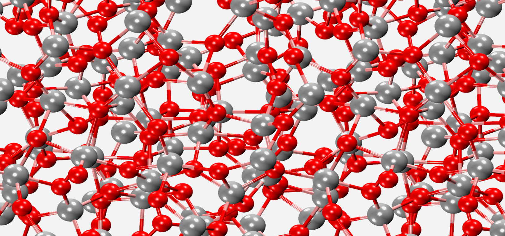

Disordered materials, glasses, and glass-ceramics
I investigate structural, vibrational, dynamical, and electronic properties of oxide and chalcogenide glasses, as well as glass-ceramic materials. A central objective is to uncover structure-property relationships in systems with strong local disorder.